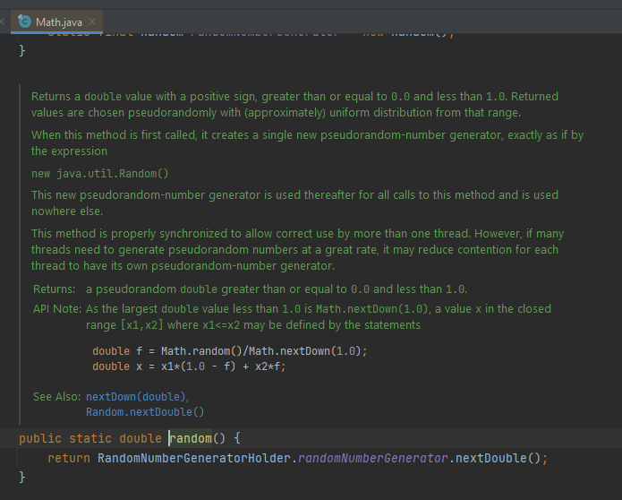
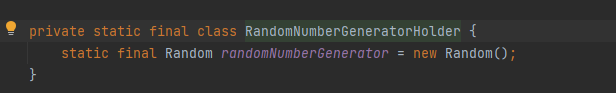
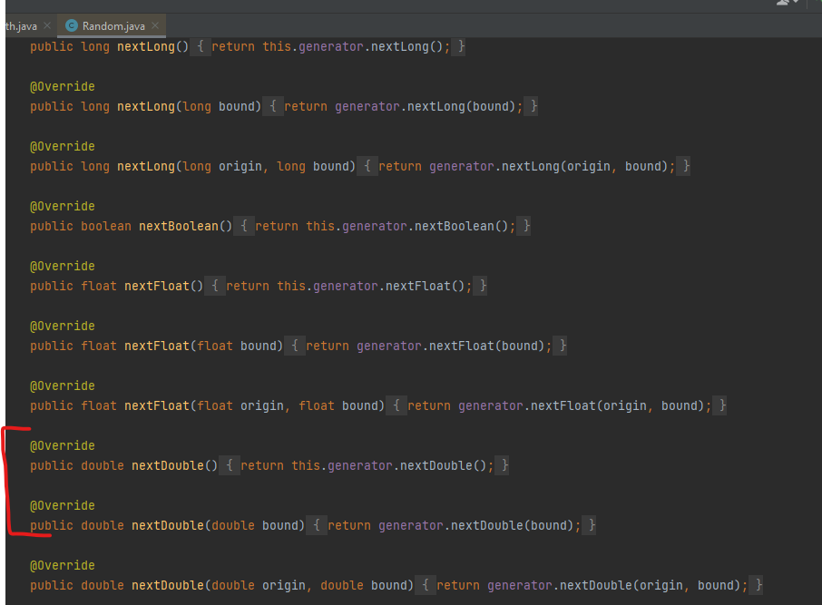

La clase Random
La clase Random de Java es útil a la hora de querer generar valores aleatorios de forma rápida y fácil.
Para poder generar números aleatorios se tiene que crear una instancia de la clase Random (como hacemos con Scanner, por ejemplo):
Random random = new Random();Una vez hecho, ya podemos utilizar el objeto random para generar números aleatorios con los métodos que nos ofrece la clase Random. Por ejemplo, para un número entero sería de la siguiente manera:
int aleatorio= random.nextInt();La instrucción anterior nos puede generar un número entero que abarca desde -232 hasta 232. Si queremos generar un número aleatorio en un rango, lo podemos hacer con el mismo método pero poniendo el rango entre paréntesis:
aleatorio = random.nextInt(100);Lo que estamos diciéndole realmente es lo siguiente: 100 es la cantidad de números enteros que queremos en el rango, y si no indicamos nada más, 0 es el término inicial del rango. Por lo tanto, generará un número incluido en [0,99].
Pero como normalmente vamos a necesitar el rango completo, es decir, [1,100], deberemos expresarlo así:
aleatorio = random.nextInt(100) + 1;Lo más habitual para generar un número aleatorio es usar el método .nextDouble(). Un aspecto importante a tener en cuenta es que el valor devuelto se encuentra en el rango mayor o igual a cero y menor a 1. Es decir, el número devuelto puede ser cero pero no puede ser uno. ¿Por qué? Mira lo que pasa...
[EXPLICACIÓN EN CLASE]
En el caso de necesitar números aleatorios enteros en un rango determinado, simplemente multiplicaremos. Para el primer caso [0,99] sería:
aleatorio = (int) random.nextDouble() * 100 + 0; //se puede borrar el '+ 0'y para el segundo [1,100]:
aleatorio = (int) random.nextDouble() * 100 + 1;Es decir, la fórmula sería: (int) random.nextDouble() * cantidad_números_rango + término_inicial_rango
Math.Random()
Como curiosidad, decir que también existe la función Math.random() que nos permite calcular números aleatorios. Siempre devuelve un valor de tipo double (por defecto, [0,0.999999999]), es decir, se comporta igual que .nextDouble() del caso anterior.
Bajo manga, Math.random() utiliza la clase Random de todos modos. En la primera llamada a ella, se inicializa una instancia de Random y después de eso, sigue llamando al método .nextDouble():



Como ves, Random es superior en jerarquía, permitiendo solicitar booleanos aleatorios, secuencias de bytes, dobles, flotantes y enteros. Por lo tanto, debemos acostumbrarnos a usar sólo la clase Random en vez de la función Math.random().
Ejemplo:
Random rnd=new Random();
int aleatorio=rnd.nextInt();
System.out.println(aleatorio);
aleatorio=rnd.nextInt(100);
System.out.println(aleatorio);
float ale=rnd.nextFloat();
System.out.println(ale);
double ale2=rnd.nextDouble();
System.out.println(ale2);
long ale3=rnd.nextLong();
System.out.println(ale3);
boolean ale4=rnd.nextBoolean();
System.out.println(ale4);
aleatorio = rnd.nextInt(100) + 1;
System.out.println(aleatorio);
aleatorio = (int) rnd.nextFloat()*100 + 1;
System.out.println(aleatorio);
ale2 = Math.random();
System.out.println(ale2);
aleatorio = (int) Math.random()*10 + 1 ;
System.out.println(aleatorio);